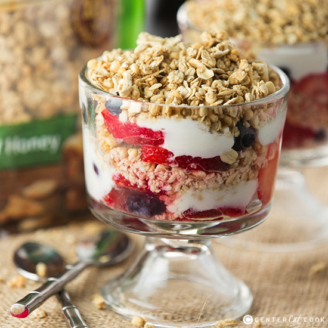

Home (Recipe List)
Greek Yogurt Breakfast Parfait

Description
Enjoy this delicious, versatile Greek yogurt parfait for breakfast or as a snack or dessert.
Ingredients
- ½ cup fresh blueberries
- ½ cup sliced fresh strawberries
- 1 teaspoon white sugar (Optional)
- 6 tablespoons granola, or as needed
- 1 (6 ounce) container nonfat vanilla Greek yogurt
- 1 teaspoon lemon zest
Steps
- Add blueberries and strawberries to a small bowl. Sprinkle with sugar; stir to coat the berries.
- Place 2 tablespoons granola in the bottom of 2 parfait glasses. Spoon 2 tablespoons yogurt on top and sprinkle with 1/2 teaspoon lemon zest. Top with 1/3 of the berries. Repeat layers until the parfait glasses are full.
Return To Top Of Page